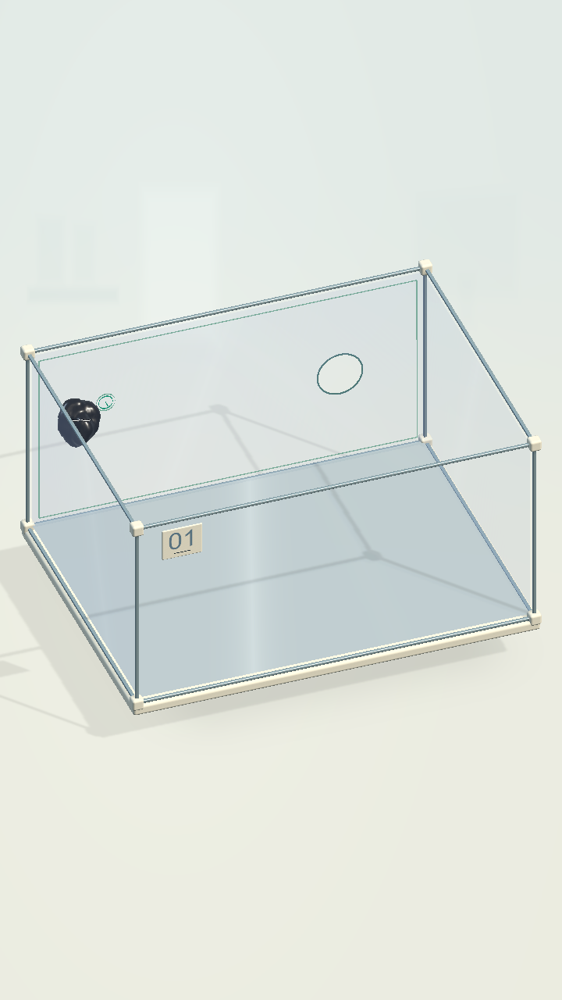

COghe · Kính trần bám được
Màn 1–6: lỗ thoát trên tường kính, bỏ dải trơn quanh sàn và tấm bám phụ. Màn 7: công tắc trực tiếp trên kính; lớp phủ trơn ngăn đi vòng qua cầu.
Ảnh chụp từ bản Mac mới, 7/7 màn đã qua bằng thao tác touch tự động. Chạm ảnh để xem kích thước đầy đủ. Hồ sơ thay đổi và kiểm chứng. Bản Mac đạt khoảng 59–60 FPS trên Apple M5.
COghe đang bám lên tường kính ở màn 1:
